library(tidyverse)
library(googlesheets4)
library(ggrepel)
library(readxl)7 Основы статистики
7.1 Предварительные требования
Для работы по теме текущей лекции вам понадобятся пакеты из tidyverse. Помимо этого, мы будем работать с данными через интерфейс Google Sheets напрямую с использованием пакетов googledrive и googlesheets4. Также в лекции используется пакет ggrepel, позволяющий устранять конфликты подписей на графиках ggplot:
7.2 Введение
Математическая статистика — раздел математики, посвящённый математическим методам систематизации, обработки и использования статистических данных для научных и практических выводов. Под статистическими данными обычно понимают числовую информацию, извлекаемую из результатов выборочных обследований, результаты серии неточных измерений и вообще любую систему количественных данных (Прохоров 2011).
Статистический метод представляет собой важнейший инструмент исследования, применяющийся во всех без исключения областях науки и технологий. Математическая статистика тесно связана с теорией вероятностей – разделом математики, изучающим математические модели случайных явлений. В силу огромного разнообразия статистических методов и специфики их применения в разных приложения, в одной лекции нет возможности (и смысла) представить их в одной лекции.
В связи с этим в настоящем разделе представляются основные инструменты статистики, такие как: простейшие приемы статистического описания (описательные статистики), проверка статистических гипотез, оценка плотности распределения, корреляция и регрессия. Помимо этого, в настоящем разделе большое внимание уделено построению специализированных графиков, отражающих особенности распределения величины: гистограмм, диаграмм размаха, линий регрессии и локальной регрессии, кривых и поверхностей плотности распределения.
7.2.1 Источники данных
7.2.1.1 База данных Gapminder
В данной лекции мы будем работать с базой данных Gapminder, которая содержит уникальный набор показателей по странам мира, агрегированный из различных источников (многие показатели имеют ряды на несколько столетий!):
Gapminder отлично подходит для знакомства со основами статистического анализа в R, поскольку эта база данных содержит показатели с разным видом распределения, которые сгруппированы по макрорегионам и континентам, и, разумеется, имеют между собой ряд взаимосвязей, совместное поведение которых можно изучать посредством корреляционного и регрессионного анализа.
Данные Gapminder можно загружать в текстовом формате и формате Microsoft Excel, но также можно и через программный интерфейс Google Sheets. Для этого требуется выбрать показатель в каталоге данных, расположенном по адресу https://www.gapminder.org/data/, открыть описание источника и перейти к онлайн-таблице:

Ключ открывшейся таблицы расположен в адресной строке между компонентами /d/ и /edit#:

7.2.1.2 Пакет googlesheets4
Доступ к облачным таблицам — удобный способ работы с табличными данными, который позволяет избавиться от манипуляций с локальными файлами. Свои данные вы тоже можете хранить в таблицах Google. Если таблицы регулярно обновляются держателем данных, загрузка их из облачного хранилища будет гарантировать вам актуальность анализируемой информации. Ограниченем такого режима работы является то, что для доступа к данным вам нужен Интернет.
Пакет googlesheets4 открывает доступ к таблицам Google. С кратким руководством по использованию пакета вы можете ознакомиться тут. Данный пакет использует версию 4.x Google Sheets API (отсюда цифра 4 в навании) и рекомендуется к использованию вместо устаревшего пакета googlesheets.
Пакет googlesheets4 работает в связке с пакетом googledrive, обеспечивающим общие методы доступа к Google Drive. Для загрузки достаточно вызвать функцию read_sheet(), передав ей в качестве аргумента ключ таблицы Google (см. предыдущий раздел):
В качестве примера возьмем данные по ВВП на душу населения:
gdpdf = read_sheet('1cxtzRRN6ldjSGoDzFHkB8vqPavq1iOTMElGewQnmHgg')
gdpdf# A tibble: 260 × 256
GDP per capita PPP, with p…¹ `1764` `1765` `1766` `1767` `1768` `1769` `1770`
<chr> <dbl> <dbl> <dbl> <dbl> <dbl> <dbl> <dbl>
1 Abkhazia NA NA NA NA NA NA NA
2 Afghanistan NA NA NA NA NA NA NA
3 Akrotiri and Dhekelia NA NA NA NA NA NA NA
4 Albania NA NA NA NA NA NA NA
5 Algeria NA NA NA NA NA NA NA
6 American Samoa NA NA NA NA NA NA NA
7 Andorra NA NA NA NA NA NA NA
8 Angola NA NA NA NA NA NA NA
9 Anguilla NA NA NA NA NA NA NA
10 Antigua and Barbuda NA NA NA NA NA NA NA
# ℹ 250 more rows
# ℹ abbreviated name: ¹`GDP per capita PPP, with projections`
# ℹ 248 more variables: `1771` <dbl>, `1772` <dbl>, `1773` <dbl>, `1774` <dbl>,
# `1775` <dbl>, `1776` <dbl>, `1777` <dbl>, `1778` <dbl>, `1779` <dbl>,
# `1780` <dbl>, `1781` <dbl>, `1782` <dbl>, `1783` <dbl>, `1784` <dbl>,
# `1785` <dbl>, `1786` <dbl>, `1787` <dbl>, `1788` <dbl>, `1789` <dbl>,
# `1790` <dbl>, `1791` <dbl>, `1792` <dbl>, `1793` <dbl>, `1794` <dbl>, …Аналогично рассмотрим показатель ожидаемой продолжительности жизни:
lifedf = read_sheet('1H3nzTwbn8z4lJ5gJ_WfDgCeGEXK3PVGcNjQ_U5og8eo')
lifedf# A tibble: 260 × 218
`Life expectancy` `1800` `1801` `1802` `1803` `1804` `1805` `1806` `1807`
<chr> <dbl> <dbl> <dbl> <dbl> <dbl> <dbl> <dbl> <dbl>
1 Abkhazia NA NA NA NA NA NA NA NA
2 Afghanistan 28.2 28.2 28.2 28.2 28.2 28.2 28.2 28.1
3 Akrotiri and Dhekelia NA NA NA NA NA NA NA NA
4 Albania 35.4 35.4 35.4 35.4 35.4 35.4 35.4 35.4
5 Algeria 28.8 28.8 28.8 28.8 28.8 28.8 28.8 28.8
6 American Samoa NA NA NA NA NA NA NA NA
7 Andorra NA NA NA NA NA NA NA NA
8 Angola 27.0 27.0 27.0 27.0 27.0 27.0 27.0 27.0
9 Anguilla NA NA NA NA NA NA NA NA
10 Antigua and Barbuda 33.5 33.5 33.5 33.5 33.5 33.5 33.5 33.5
# ℹ 250 more rows
# ℹ 209 more variables: `1808` <dbl>, `1809` <dbl>, `1810` <dbl>, `1811` <dbl>,
# `1812` <dbl>, `1813` <dbl>, `1814` <dbl>, `1815` <dbl>, `1816` <dbl>,
# `1817` <dbl>, `1818` <dbl>, `1819` <dbl>, `1820` <dbl>, `1821` <dbl>,
# `1822` <dbl>, `1823` <dbl>, `1824` <dbl>, `1825` <dbl>, `1826` <dbl>,
# `1827` <dbl>, `1828` <dbl>, `1829` <dbl>, `1830` <dbl>, `1831` <dbl>,
# `1832` <dbl>, `1833` <dbl>, `1834` <dbl>, `1835` <dbl>, `1836` <dbl>, …Дальнейшие примеры статистического анализа будут основываться на этих данных.
7.3 Одна переменная
7.3.1 Оценка распределения
Для оценки распределения случайной величины можно использовать графические и статистические способы. Выявление типа распределения важно, поскольку статистические методы не универсальны, и во многих случаях предполагают, что изучаемая переменная подчиняется определенному закону распределения (как правило, нормальному).
Приведем выгруженные ранее данные ВВП к аккуратному виду, избавившись от множества столбцов с годом измерения. Сразу получим данные за 2015 год для анализа:
gdpdf_tidy = gdpdf %>%
pivot_longer(cols = `1764`:`2018`,
names_to = 'year',
values_to = 'gdp',
names_transform = list(year = as.integer)) %>%
rename(Country = 1)
gdpdf15 = filter(gdpdf_tidy, year == 2015)
gdpdf15# A tibble: 260 × 3
Country year gdp
<chr> <int> <dbl>
1 Abkhazia 2015 NA
2 Afghanistan 2015 1418.
3 Akrotiri and Dhekelia 2015 NA
4 Albania 2015 7343.
5 Algeria 2015 6797.
6 American Samoa 2015 NA
7 Andorra 2015 NA
8 Angola 2015 6512.
9 Anguilla 2015 NA
10 Antigua and Barbuda 2015 14884.
# ℹ 250 more rowsДля визуальной проверки вида распределения можно использовать геометрию geom_histogram():
ggplot(gdpdf15, aes(x = gdp)) +
geom_histogram()
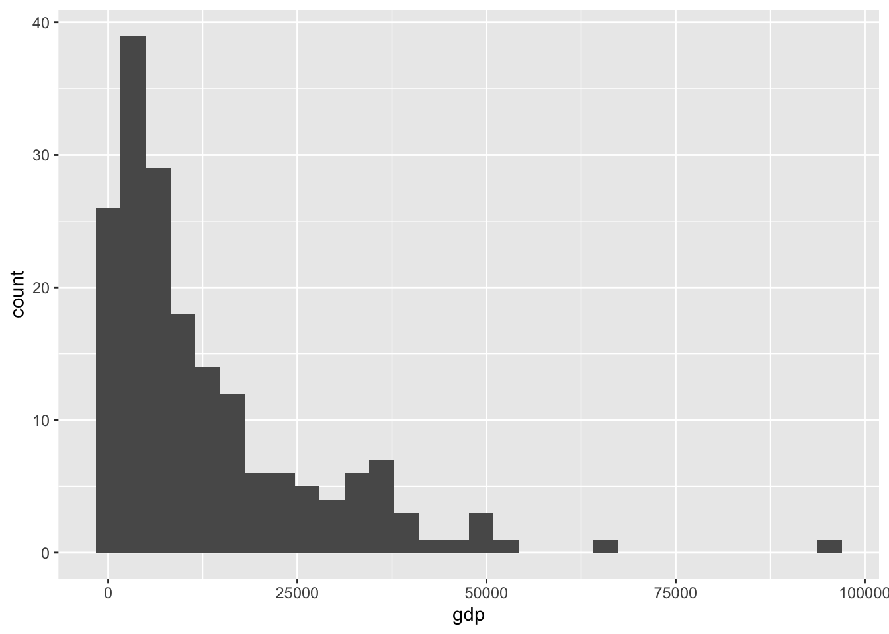
Изменить ширину кармана можно, используя параметр binwidth:
ggplot(gdpdf15, aes(x = gdp)) +
geom_histogram(binwidth = 5000, color = 'black', fill = 'steelblue', size = 0.2)
Преобразуем в аккуратный вид и строим гистограмму распределения:
lifedf_tidy = lifedf %>%
pivot_longer(cols = `1800`:`2016`,
names_to = 'year',
values_to = 'lifexp',
names_transform = list(year = as.integer)) %>%
rename(Country = 1)
lifedf15 = dplyr::filter(lifedf_tidy, year == 2015)
ggplot(lifedf15, aes(x = lifexp)) +
geom_histogram(binwidth = 2, color = 'black', fill = 'olivedrab', size = 0.2)
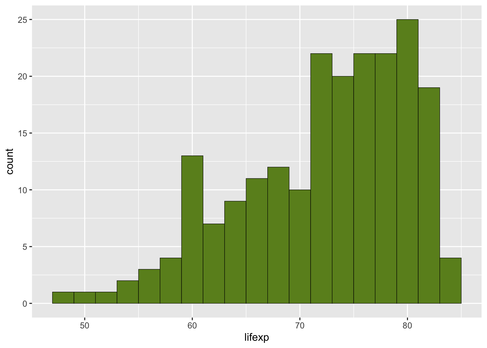
Для графической оценки распределения удобно использовать не только гистограмму, но также метод ядерного сглаживания (kernel density), который позволяет строить аппроксимацию функции плотности вероятности. Условно говоря, ядро является функцией, которая позволяет распространить потенциал каждого элемента выборки на его ближайшую окрестность. Чем больше элементов выборки сконцентрировано вблизи данной точки, тем сильнее будет их совокупно наведенный потенциал в данной точке, и тем, соответственно, выше оценка плотности распределения, которая получается суперпозицией этих потенциалов. Математически операция ядерной оценки плотности в точке \(x\) определяется как: \[ \hat f_h (x) = \frac{1}{nh}\sum_{i=1}^{n}K\Big(\frac{x - x_i}{h}\Big) \] где \(K\) — ядерная функция, \(h > 0\) — сглаживающий параметр, \(x_i\) — элементы выборки, \(n\) — размер выборки. Ядерная функция должна удовлетворять двум критериям: \(K(x) \geq 0\), \(\int_{-\infty}^{+\infty} K(x) dx = 1\). Отсюда ясно, что любая модель функции плотности распределения может быть использована в качестве ядра: равномерное, нормальное и т.д. Как правило, ядерная функция носит бесконечно убывающий характер: чем дальше мы находимся от точки, тем меньше ее вклад в плотность распределения.
В ggplot за аппроксимацию плотности распределения методом ядерного сглаживания отвечает геометрия geom_density():
ggplot(gdpdf15, aes(x = gdp)) +
geom_density(color = 'black', fill = 'steelblue', alpha = 0.5)
ggplot(lifedf15, aes(x = lifexp)) +
geom_density(color = 'black', fill = 'olivedrab', alpha = 0.5)
Вы можете комбинировать гистограммы и оценку плотности распределения, но для этого гистограмма по оси Y должна отражать не фактическое количество элементов в каждом классе, а долю или плотность вероятности (y = stat(density)):
ggplot(gdpdf15, aes(x = gdp)) +
geom_histogram(aes(y = stat(density)), fill = 'grey', color = 'black', size = 0.1) +
geom_density(color = 'black', fill = 'steelblue', alpha = 0.5)
ggplot(lifedf15, aes(x = lifexp)) +
geom_histogram(aes(y = stat(density)), fill = 'grey', color = 'black', size = 0.1) +
geom_density(color = 'black', fill = 'olivedrab', alpha = 0.5)
При построении гистограмм и оценке плотности распределения мы допустили ошибку: приняли, что все измерения являются равнозначными. Однако в данном случае это не так. Население Люксембурга и Пакистана отличается на два порядка — это означает, что Пакистан должен иметь соответственно больший вес при построении гистограммы. Для учета этой характеристики подгрузим из Gapminder данные по численности населения и присоединим их к нашим таблицам по ВВП и продолжительности жизни:
popdf_tidy =
read_sheet('1IbDM8z5XicMIXgr93FPwjgwoTTKMuyLfzU6cQrGZzH8') %>% # численность населения
pivot_longer(cols = `1800`:`2015`,
names_to = 'year',
values_to = 'pop',
names_transform = list(year = as.integer)) %>%
rename(Country = 1)
(tab = gdpdf_tidy %>%
inner_join(lifedf_tidy) %>%
inner_join(popdf_tidy))# A tibble: 19,359 × 5
Country year gdp lifexp pop
<chr> <int> <dbl> <dbl> <dbl>
1 Abkhazia 1800 NA NA NA
2 Abkhazia 1810 NA NA NA
3 Abkhazia 1820 NA NA NA
4 Abkhazia 1830 NA NA NA
5 Abkhazia 1840 NA NA NA
6 Abkhazia 1850 NA NA NA
7 Abkhazia 1860 NA NA NA
8 Abkhazia 1870 NA NA NA
9 Abkhazia 1880 NA NA NA
10 Abkhazia 1890 NA NA NA
# ℹ 19,349 more rowsТеперь мы можем произвести взвешенную оценку плотности распределения:
tab15 = tab %>%
dplyr::filter(year == 2015) %>%
drop_na() # все веса должны быть непустыми!
ggplot(tab15, aes(x = gdp, y = stat(density), weight = pop/sum(pop))) +
geom_histogram(binwidth = 5000, fill = 'grey', color = 'black', size = 0.1) +
geom_density(color = 'black', fill = 'steelblue', alpha = 0.5)
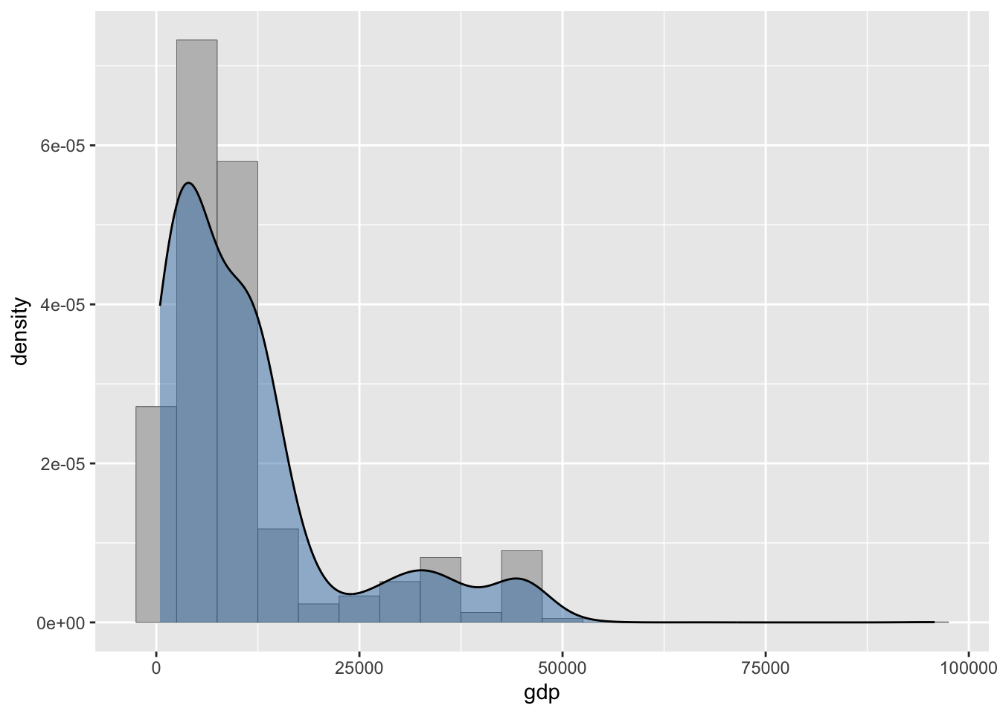
ggplot(tab15, aes(x = lifexp, y = stat(density), weight = pop/sum(pop))) +
geom_histogram(binwidth = 2.5, fill = 'grey', color = 'black', size = 0.1) +
geom_density(color = 'black', fill = 'olivedrab', alpha = 0.5)
Графики плотности распределения удобны тем, что их, в отличие от гистограмм, удобно комбинировать на одном изображении, используя цвет для разделения по еще одной переменной. Например, мы можем оценить, как изменились мировые диспропорции в продолжительности жизни и доходов населения за последние 50 лет (обратите внимание на параметр fill = year в эстетике:
tab85 = tab %>%
dplyr::filter(year %in% c(1965, 2015)) %>%
drop_na()
ggplot(tab85, aes(x = gdp, fill = factor(year), weight = pop/sum(pop))) +
geom_density(alpha = 0.5)
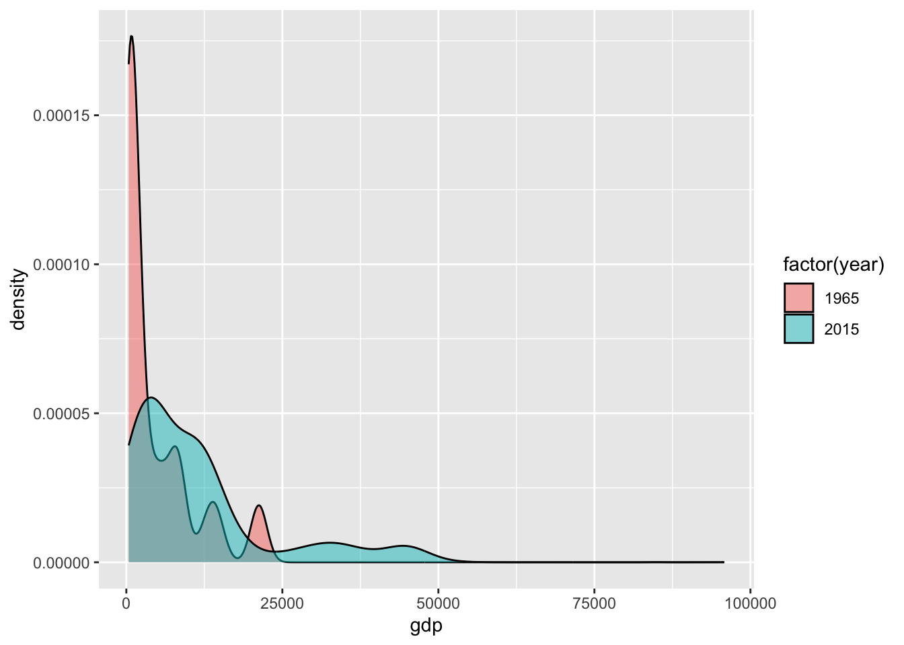
ggplot(tab85, aes(x = lifexp, fill = factor(year), weight = pop/sum(pop))) +
geom_density(alpha = 0.5)
7.3.2 Описательные статистики
Описательные статистики — это числовые характеристики, описывающие особенности статистического распределения изучаемой величины. К таким характеристикам относят выборочное среднее, медиану, минимум, максимум и ряд других величин. Можно вычислять эти характеристики для всей выборки, но для включения географического контекста мы стратифицируем ее по макрорегионам, которые используются в базе данных Gapminder. Подгрузим эту информацию (географические данные находятся по адресу https://www.gapminder.org/data/geo/):
countries = read_sheet('1qHalit8sXC0R8oVXibc2wa2gY7bkwGzOybEMTWp-08o', 2) %>%
select(Country = name, Region = eight_regions) %>%
mutate(Country = factor(Country, levels = Country[order(.$Region)]))
# '1IbDM8z5XicMIXgr93FPwjgwoTTKMuyLfzU6cQrGZzH8' %>% # численность населения
# as_id() %>% # преобразуем идентификатор в класс drive_id чтобы отличать его от пути
# drive_get() %>%
# read_sheet(sheet = 2) -> countriesВизуализируем:
ggplot(countries, aes(x = Country, y = 1, fill = Region)) +
geom_col() +
geom_text(aes(y = 0.5, label = Country), size = 3) +
facet_wrap(~Region, scales = "free", ncol = 4) +
theme_bw()+
theme(panel.grid = element_blank(),
axis.title.y = element_blank(),
axis.text.y = element_blank(),
axis.ticks.y = element_blank(),
axis.title.x = element_blank(),
axis.text.x = element_blank(),
axis.ticks.x = element_blank()) +
guides(fill=FALSE) +
coord_flip()
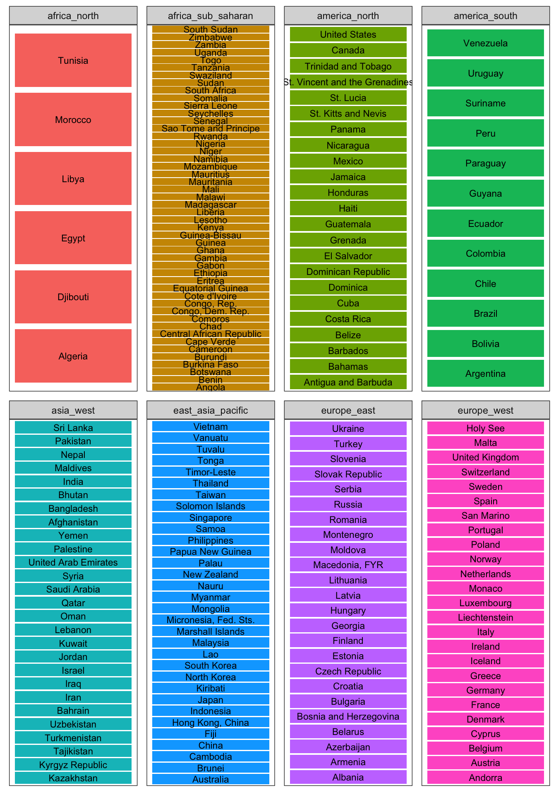
Присоединим эти данные к исходной таблице:
(tabreg = tab %>%
left_join(countries) %>%
dplyr::filter(year == 2015) %>%
drop_na())# A tibble: 172 × 6
Country year gdp lifexp pop Region
<chr> <int> <dbl> <dbl> <dbl> <chr>
1 Afghanistan 2015 1418. 53.8 32526562 asia_west
2 Albania 2015 7343. 78 2896679 europe_east
3 Algeria 2015 6797. 76.4 39666519 africa_north
4 Angola 2015 6512. 59.6 25021974 africa_sub_saharan
5 Antigua and Barbuda 2015 14884. 76.4 91818 america_north
6 Argentina 2015 16640. 76.5 43416755 america_south
7 Armenia 2015 5561. 74.7 3017712 europe_east
8 Australia 2015 38085. 82.3 23968973 east_asia_pacific
9 Austria 2015 37811. 81.3 8544586 europe_west
10 Azerbaijan 2015 10475. 72.9 9753968 europe_east
# ℹ 162 more rowsМы уже знакомы с функциями min(), max(), median(), mean(), sd(), которые дают значения соответствующих описательных статистик для векторов данных. Как представить их все одновременно? Для визуализации отличий в статистических параметрах исследуемой выборки удобно использовать тип графика, который называется boxplot (а по русски — диаграмма размаха, улей, или ящик с усами). В ggplot за него отвечает геометрия geom_boxplot():
ggplot(tabreg, aes(x = Region, y = gdp)) +
geom_boxplot() + coord_flip()
ggplot(tabreg, aes(x = Region, y = lifexp)) +
geom_boxplot() + coord_flip()
Данные графики наглядно показывают, что регионы отличаются по ряду статистических параметров исследуемой переменной: среднему значению, размаху вариации (разбросу значений), среднеквадратическому отклонению Эти статистики можно получить и в табличном виде:
(tabreg %>%
group_by(Region) %>%
summarise(gdp_mean = mean(gdp),
gdp_sd = sd(gdp),
lifexp_mean = mean(lifexp),
lifexp_sd = sd(lifexp)))# A tibble: 8 × 5
Region gdp_mean gdp_sd lifexp_mean lifexp_sd
<chr> <dbl> <dbl> <dbl> <dbl>
1 africa_north 6897. 3386. 73 4.97
2 africa_sub_saharan 3583. 4553. 62.3 5.31
3 america_north 13835. 11451. 74.9 4.00
4 america_south 10350. 4277. 75.1 3.50
5 asia_west 16374. 20957. 73.7 6.51
6 east_asia_pacific 14062. 16634. 72.4 6.68
7 europe_east 13634. 7030. 75.9 2.86
8 europe_west 33571. 11104. 81.5 1.247.3.3 Статистические тесты
Прежде чем манипулировать вычисленными статистиками (говорить, что в Западной Европе ВВП на душу населения в 10 раз выше, чем в Южной Африке), необходимо убедиться, что их отличия являются статистически значимыми. На статистическую значимость влияет не только абсолютная разность средних, но также характер распределения и объем выборки — выборки малого объема не могут дать высокой статистической значимости.
Для сравнения средних значений и дисперсий двух статистических выборок обычно используют тест Стьюдента и тест Фишера соответственно.
Проведем тесты для сравнения средних по Европе и Южной Африке используя функцию t.test() (на самом деле это тест Уэлча, являющийся модификацией теста Стьюдента):
t.test(tabreg %>% dplyr::filter(Region == 'africa_sub_saharan') %>% pull(gdp),
tabreg %>% dplyr::filter(Region == 'europe_west') %>% pull(gdp))
Welch Two Sample t-test
data: tabreg %>% dplyr::filter(Region == "africa_sub_saharan") %>% pull(gdp) and tabreg %>% dplyr::filter(Region == "europe_west") %>% pull(gdp)
t = -11.384, df = 20.547, p-value = 2.487e-10
alternative hypothesis: true difference in means is not equal to 0
95 percent confidence interval:
-35473.63 -24502.15
sample estimates:
mean of x mean of y
3583.326 33571.214 t.test(tabreg %>% dplyr::filter(Region == 'africa_sub_saharan') %>% pull(lifexp),
tabreg %>% dplyr::filter(Region == 'europe_west') %>% pull(lifexp))
Welch Two Sample t-test
data: tabreg %>% dplyr::filter(Region == "africa_sub_saharan") %>% pull(lifexp) and tabreg %>% dplyr::filter(Region == "europe_west") %>% pull(lifexp)
t = -23.037, df = 55.262, p-value < 2.2e-16
alternative hypothesis: true difference in means is not equal to 0
95 percent confidence interval:
-20.87392 -17.53317
sample estimates:
mean of x mean of y
62.25435 81.45789 p-значения для данных тестов очень малы, что позволяет нам принять (не отвергать) гипотезу о неравенстве средних для Западной Европы и Южной Африки.
Проверим, так ли значимы отличия в средних для Северной и Южной Америки:
t.test(tabreg %>% dplyr::filter(Region == 'america_north') %>% pull(gdp),
tabreg %>% dplyr::filter(Region == 'america_south') %>% pull(gdp))
Welch Two Sample t-test
data: tabreg %>% dplyr::filter(Region == "america_north") %>% pull(gdp) and tabreg %>% dplyr::filter(Region == "america_south") %>% pull(gdp)
t = 1.1742, df = 23.283, p-value = 0.2522
alternative hypothesis: true difference in means is not equal to 0
95 percent confidence interval:
-2650.736 9620.806
sample estimates:
mean of x mean of y
13834.72 10349.69 t.test(tabreg %>% dplyr::filter(Region == 'america_north') %>% pull(lifexp),
tabreg %>% dplyr::filter(Region == 'america_south') %>% pull(lifexp))
Welch Two Sample t-test
data: tabreg %>% dplyr::filter(Region == "america_north") %>% pull(lifexp) and tabreg %>% dplyr::filter(Region == "america_south") %>% pull(lifexp)
t = -0.20306, df = 25.802, p-value = 0.8407
alternative hypothesis: true difference in means is not equal to 0
95 percent confidence interval:
-3.121651 2.560540
sample estimates:
mean of x mean of y
74.86111 75.14167 В данном случае, несмотря на то, что вычисленные значения средних отличаются, тест показывает очень высокие p-значения (0.25 и 0.84 соответственно), что не позволяет нам говорить о том, что эти отличия статистически значимы. Соответственно, делать на их основе какие-либо научные выводы нельзя.
Аналогичным образом можно проверить статистическую значимость отличий в дисперсии (вариации значений) для разных регионов. Для этого используем функцию var.test() применительно к регионам Западной и Восточной Европы:
var.test(tabreg %>% dplyr::filter(Region == 'europe_east') %>% pull(gdp),
tabreg %>% dplyr::filter(Region == 'europe_west') %>% pull(gdp))
F test to compare two variances
data: tabreg %>% dplyr::filter(Region == "europe_east") %>% pull(gdp) and tabreg %>% dplyr::filter(Region == "europe_west") %>% pull(gdp)
F = 0.40087, num df = 22, denom df = 18, p-value = 0.0434
alternative hypothesis: true ratio of variances is not equal to 1
95 percent confidence interval:
0.1585416 0.9726112
sample estimates:
ratio of variances
0.4008741 var.test(tabreg %>% dplyr::filter(Region == 'europe_east') %>% pull(lifexp),
tabreg %>% dplyr::filter(Region == 'europe_west') %>% pull(lifexp))
F test to compare two variances
data: tabreg %>% dplyr::filter(Region == "europe_east") %>% pull(lifexp) and tabreg %>% dplyr::filter(Region == "europe_west") %>% pull(lifexp)
F = 5.3246, num df = 22, denom df = 18, p-value = 0.0006859
alternative hypothesis: true ratio of variances is not equal to 1
95 percent confidence interval:
2.105831 12.918723
sample estimates:
ratio of variances
5.324617 Данный тест показывает, что отличия в вариации значений ВВП на душу населения для Западной и Восточной Европы носят пограничный характер (p = 0.04), и принимать их можно только если стоит относительно высокое пороговое значение p = 0.05. В то же время, вариация продолжительности жизни для Западной Европы существенной меньше, чем для Восточной и при данной выборке это отличие обладает высокой статистической значимостью (p = 0.0007). Соответственно, его можно принимать с уверенностью.
7.4 Две переменных
Достаточно часто в задачах анализа данных возникает необходимость совместного изучения нескольких переменных. Данный раздел посвящен анализу двух переменных.
7.4.1 Оценка распределения
7.4.1.1 Диаграмма рассеяния
Первичный анализ производится путем оценки совместного распределения переменных на плоскости (для двух переменных) путем построения диаграммы рассеяния. С этим графиком мы уже хорошо знакомы:
ggplot(tabreg, aes(gdp, lifexp)) +
geom_point()
Очевидно, что в данном случае мы имеем с нелинейной зависимостью. Чтобы упростить задачу по дальнейшему анализу, можно попробовать перейти к логарифмической шкале по оси X:
options(scipen = 999)
ggplot(tabreg, aes(gdp, lifexp)) +
geom_point() +
scale_x_log10()
На диаграмме рассеяния важно показать не только местоположение точек, но также их весовую значимость, которая в данном случае определяется численностью населения в стране. Введем соответствующую графическую переменную — размер точки:
ggplot(tabreg, aes(gdp, lifexp, size = pop)) +
geom_point(alpha = 0.5) +
scale_x_log10()
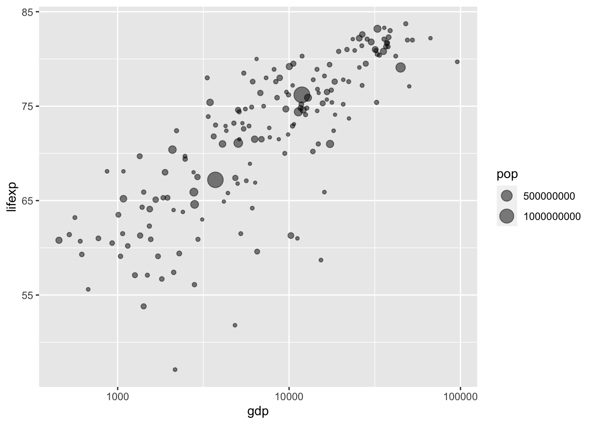
Еще сильнее повысить информативность диаграммы рассеяния можно, используя цвет точек для обозначения региона принадлежности. Это позволит понять связь между введенной нами географической стратификацией и распределением элементов выборки на диаграмме рассеяния:
ggplot(tabreg, aes(gdp, lifexp, size = pop, color = Region)) +
geom_point(alpha = 0.5) +
scale_x_log10() +
theme_bw()
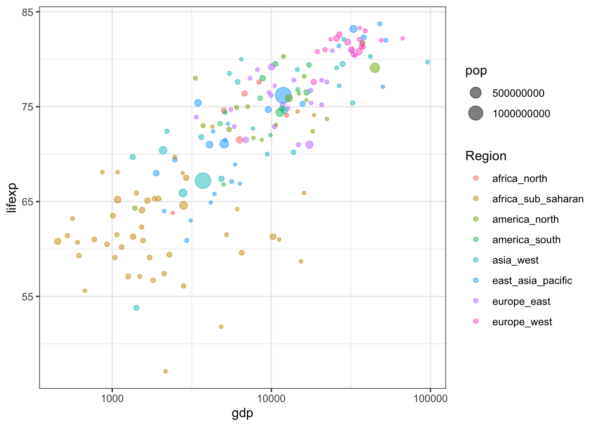
Использование цвета наглядно показывает, что африканские страны занимают нижнюю левую часть диаграммы рассеяния с малой величиной ВВП и низкой продолжительностью жизни.
Целесообразно также добавить подписи крупнейших стран мира с населением более 100 млн чел, а также страны, занимающие экстремальные позиции по обеим осям, чтобы понять положение ключевых игроков на диаграмме:
tablab = tabreg %>% # табличка для подписей
dplyr::filter(
pop > 1e8 |
gdp == min(gdp) |
gdp == max(gdp) |
lifexp == min(lifexp) |
lifexp == max(lifexp)
)
ggplot(tabreg, aes(gdp, lifexp, color = Region)) +
geom_point(aes(size = pop), alpha = 0.5) +
geom_text(data = tablab,
aes(label = Country),
check_overlap = TRUE,
show.legend = FALSE) + # убрать текст из легенды
scale_x_log10() +
theme_bw()
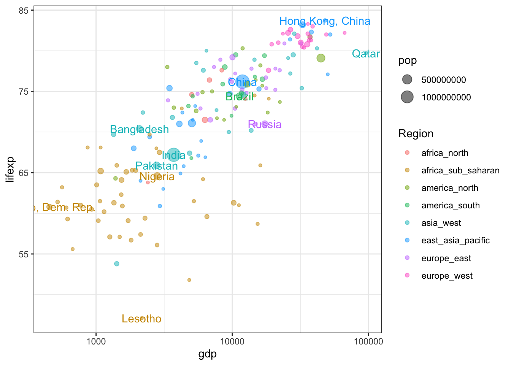
Устранение перекрытий подписей можно осуществить, используя геометрию geom_text_repel() из пакета ggrepel вместо стандартной geom_text()
ggplot(tabreg, aes(gdp, lifexp, color = Region)) +
geom_point(aes(size = pop), alpha = 0.5) +
geom_text_repel(data = tablab,
aes(label = Country),
box.padding = 0.7, # зазор вокруг подписи
segment.size = 0.2, # толщина линии выноски
show.legend = FALSE) + # убрать текст из легенды
scale_x_log10() +
labs(label = element_blank()) +
theme_bw()
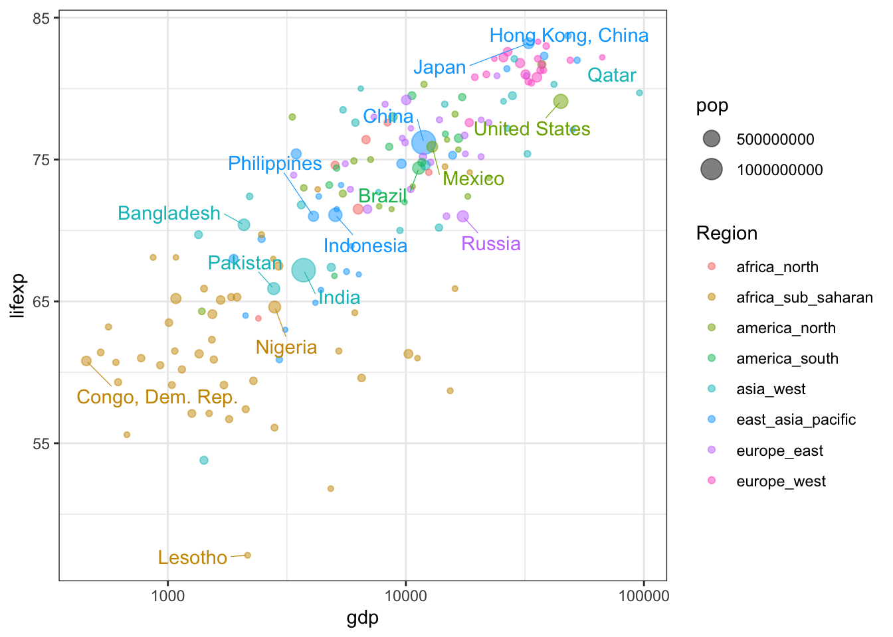
7.4.1.2 Плотность распределения
Плотность совместного распределения двух случайных величин представляет собой уже не кривую, а поверхность, которую можно построить с использованием геометрии geom_density_2d(). По умолчанию эта геометрия визуализируется в форме изолиний:
ggplot(tabreg, aes(gdp, lifexp)) +
geom_point(alpha = 0.5) +
geom_density_2d()+
scale_x_log10() +
theme_bw()
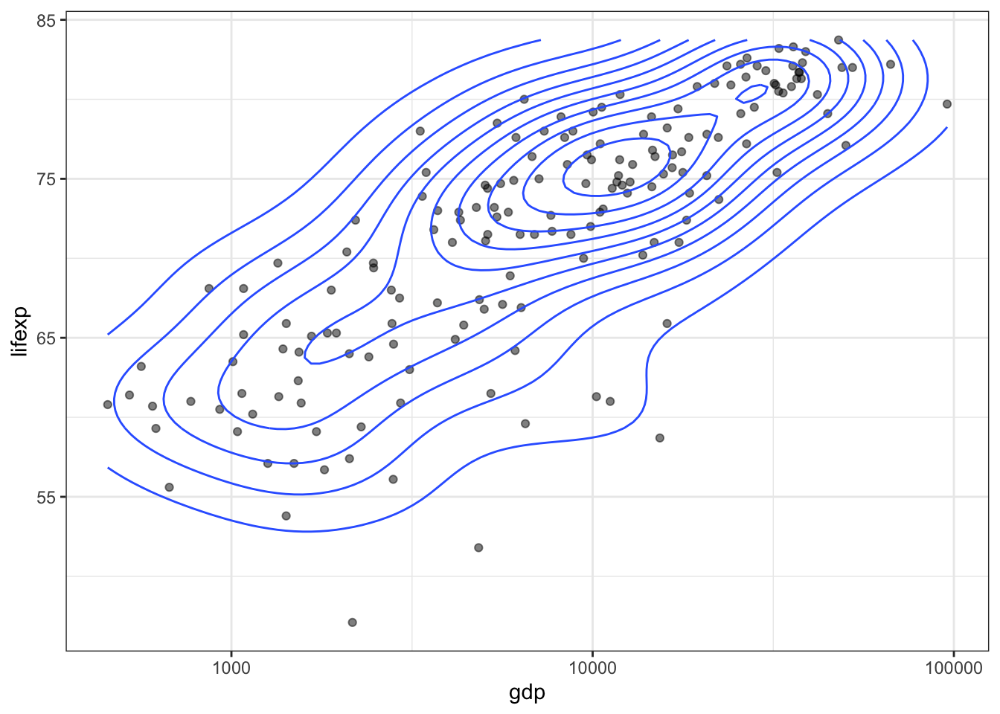
Усилить наглядность представления можно, добавив вспомогательную растровую поверхность плотности распределения (по которой, собственно, и строятся изолинии). Обратите внимание, что для растра используется функция stat_density():
ggplot(tabreg, aes(gdp, lifexp)) +
stat_density_2d(geom = "raster", aes(fill = stat(density)), contour = FALSE) +
geom_density_2d(color = 'black', size = 0.2) +
geom_point(alpha = 0.5) +
scale_fill_gradient(low = "white", high = "red") +
scale_x_log10() +
theme_bw()
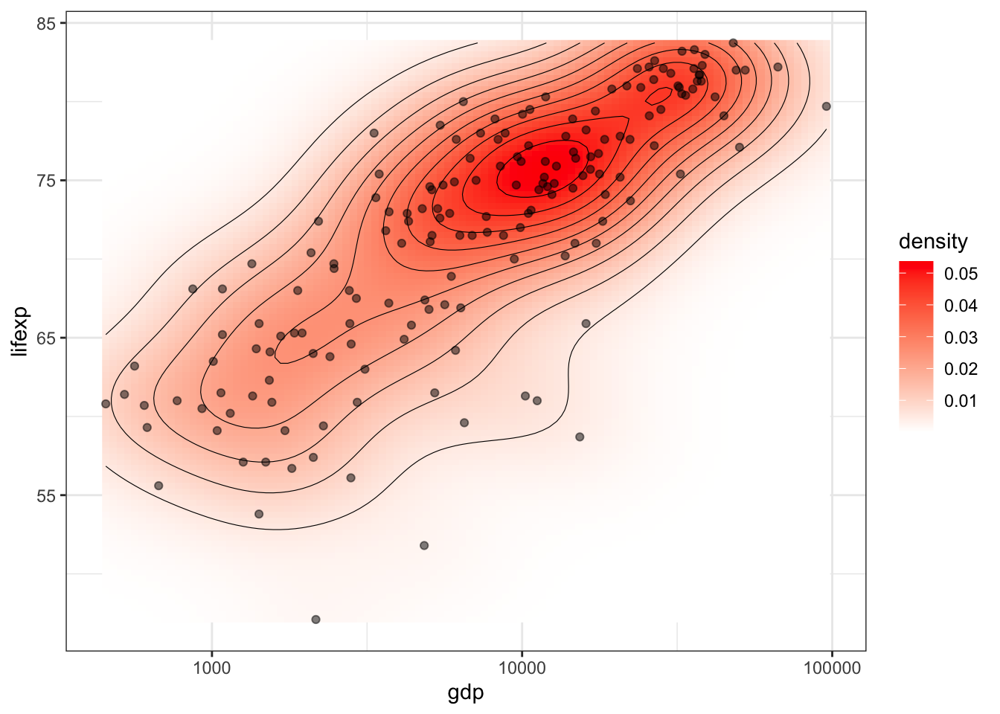
График двумерной плотности распределения показывает, что мода распределения, т.е. наиболее часто встречающийся случай, примерно соответствует странам с продолжительностью жизни 75 лет и ВВП на душу населения $10000.
В некоторых случаях удобнее оказывается не аппроксимация непрерывной поверхности плотности распределения, а подсчет количества измерений по ячейкам регулярной сетки — квадратным или гексагональным. Такой подход бывает особенно полезен, когда точек измерений очень много и из-за их количества оказывается проблематично разглядеть области их концентрации. Агрегирование данных по ячейкам осуществляется путем применения геометрий geom_bin2d() и geom_hex():
ggplot(tabreg, aes(gdp, lifexp)) +
geom_bin2d(bins = 10)+
geom_point(alpha = 0.5) +
scale_fill_gradient(low = "white", high = "red") +
scale_x_log10() +
theme_bw()
ggplot(tabreg, aes(gdp, lifexp)) +
geom_hex(bins = 10) +
geom_point(alpha = 0.5) +
scale_fill_gradient(low = "white", high = "red") +
scale_x_log10() +
theme_bw()
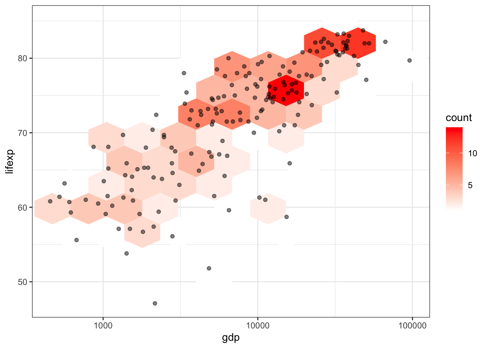
7.4.2 Корреляция и регрессия
Корреляционный анализ позволяет дать численную характеристику статистической связи между двумя случайными величинами, а регрессионный анализ — моделировать эту взаимосвязь посредством построения функции взаимосвязи зависимой и множества независимых переменных.
7.4.2.1 Корреляция
Коэффициент корреляции — это числовая характеристика совместного распределения двух случайных величин, характеризующая их взаимосвязь. Наиболее часто в статистике употребляется выборочный коэффициент корреляции Пирсона, в котором перебираются все пары соответствующих друг другу значений из рядов \(X = \{x_i\}\) и \(Y = \{y_i\}\): \[ r_{xy} = \frac{\sum_{i=1}^{n}(x_i - \bar x)(y_i - \bar y)}{\sqrt{\sum_{i=1}^{n}(x_i - \bar x)^2} \sqrt{\sum_{i=1}^{n}(y_i - \bar y)^2}}, \] где \(\bar x\) и \(\bar y\) соответствуют выборочным средним для \(X\) и \(Y\).
Важно помнить, что коэффициент корреляции Пирсона характеризует силу линейной связи между двумя величинами. Поэтому, если наблюдаемая нами картина взаимосвязи носит нелинейный характер, необходимо предварительно линеаризовать ее, то есть выполнить преобразование над переменными, приводящее к получению линейной зависимости. В нашем в случае изучения ВВП на душу населения и продолжительности жизни мы видели, что линеаризация возможна путем логарифмирования показателя ВВП.
Для вычисления коэффициента корреляции Пирсона в R с оценкой уровня значимости используется функция cor.test():
cor.test(tabreg$gdp, tabreg$lifexp)
Pearson's product-moment correlation
data: tabreg$gdp and tabreg$lifexp
t = 11.376, df = 170, p-value < 0.00000000000000022
alternative hypothesis: true correlation is not equal to 0
95 percent confidence interval:
0.5632175 0.7347928
sample estimates:
cor
0.6574446 Результат теста в данном случае показывает, что коэффициент корреляции с вероятностью 0,95 находится в интервале от 0,56 до 0,73, и его математическое ожидание равно 0,66.
Проверим, можно ли уточнить эту оценку, выполнив логарифмирование показателя ВВП:
cor.test(log(tabreg$gdp), tabreg$lifexp)
Pearson's product-moment correlation
data: log(tabreg$gdp) and tabreg$lifexp
t = 17.327, df = 170, p-value < 0.00000000000000022
alternative hypothesis: true correlation is not equal to 0
95 percent confidence interval:
0.7375973 0.8473619
sample estimates:
cor
0.7990415 Видим, что логарифмирование показателя позволяет повысить значение коэффициента корреляции до 0,8. При этом доверительный интервал, заключающий в себя эту величину с вероятностью 0,95 существенно сузился: с 0,17 до 0,11. Очевидно, мы получили более корректную оценку взаимосвязи.
7.4.2.2 Регрессия
Для построения статистической модели этой зависимости, позволяющей по значениям независимой переменной вычислять значения зависимой переменной, необходимо провести регрессионный анализ. В общем случае кривая регрессии обычно выражается линейной комбинацией набора функций: \[ y(x) = β_0φ_0(x)+ β_1φ_1(x)+...+ β_mφ_m(x) \] Наиболее часто используется полиномиальная регрессия, при которой \[ y(x) = β_0+β_1x+...+ β_mx^m. \] В этом случае основная задача регрессионного анализа сводится к поиску неизвестных коэффициентов \(β_0,...,β_m\), который осуществляется методом наименьших квадратов. Результатом этого поиска являются выборочные коэффициенты регрессии \(\hat β_0,...,\hat β_m\), которые дают оценку искомых параметров \(β_0,...,β_m\). В итоге эмпирическая линия регрессии определяется многочленом \[ \hat y(x)=\hat β_0+\hat β_1x+...+\hat β_mx_m, \] который и служит статистической оценкой неизвестной формы функциональной зависимости между исследуемыми величинами.
Для представления моделей в R существует специальный объект, который называется формула. Формула имеет вид f ~ x + y + ..., что интерпретируется соответствующими функциями как \(f = β_0 + β_1x + β_2y + \dots\)
Обратите внимание на символ тильды (
~) — он является отличительной особенностью формулы и интерпретируется как «зависит от».
Вместо переменных в формуле вы можете использовать функции от переменных. Например log(f) ~ log(x) + sqrt(y) означает модель \(\log f = β_0 + β_1 \log x + β_2 \sqrt y\). Если необходимо выполнить алгебраические преобразования переменных или задать конкретное значение свободного члена, то их необходимо заключить в специальную функцию I(): f ~ log(x) + I(y ^ 2) + I(0) будет означать модель вида \(f = β_1 \log x + β_2 y^2\).
Для краткой записи полиномиальной зависимости можно использовать вспомогательную функцию poly(), которая в качестве второго аргумента принимает степень многочлена. Т.е. f ~ poly(x, 3) означает модель вида \(f = β_0 + β_1x + β_2x^2 + β_3x^3\).
Оценка параметров линейных моделей осуществляется с помощью функции lm(). В нашем случае модель носит простой характер:
model = lm(lifexp ~ log(gdp), data = tabreg)
coef(model)(Intercept) log(gdp)
25.129347 5.261476 Полученные данные говорят нам о том, что уравнение имеет вид \(lifexp = 25.13 + 5.26 \log(gdp)\). Чтобы получить подробную сводку о качестве модели, мы можем вызвать summary():
summary(model)
Call:
lm(formula = lifexp ~ log(gdp), data = tabreg)
Residuals:
Min 1Q Median 3Q Max
-18.4327 -1.9398 0.6394 3.1638 10.1937
Coefficients:
Estimate Std. Error t value Pr(>|t|)
(Intercept) 25.1293 2.7178 9.246 <0.0000000000000002 ***
log(gdp) 5.2615 0.3037 17.327 <0.0000000000000002 ***
---
Signif. codes: 0 '***' 0.001 '**' 0.01 '*' 0.05 '.' 0.1 ' ' 1
Residual standard error: 4.785 on 170 degrees of freedom
Multiple R-squared: 0.6385, Adjusted R-squared: 0.6363
F-statistic: 300.2 on 1 and 170 DF, p-value: < 0.00000000000000022Результаты оценки говорят о том, что регрессия построена удовлетворительно. Коэффициент детерминации (квадрат коэффициента корреляции) равен 0,64.
Для визуализации модели можно извлечь из нее значения используя функцию fitted():
df = tibble(lifexp = fitted(model),
gdp = tabreg$gdp)
ggplot(tabreg, aes(gdp, lifexp)) +
geom_point(alpha = 0.5) +
geom_line(data = df, aes(gdp, lifexp), color = 'red', size = 1) +
theme_bw()
Если вам нужно только построить линию регрессии, но не находить ее коэффициенты, то вы можете пропустить этап оценки параметров модели и вывести график линейной регрессии средствами ggplot, используя геометрию geom_smooth() с параметром method = lm:
ggplot(tabreg, aes(gdp, lifexp)) +
geom_point(alpha = 0.5) +
geom_smooth(method = 'lm',
color = 'red', size = 1) +
scale_x_log10() +
theme_bw()
7.5 Краткий обзор
Для просмотра презентации щелкните на ней один раз левой кнопкой мыши и листайте, используя кнопки на клавиатуре:
Презентацию можно открыть в отдельном окне или вкладке браузере. Для этого щелкните по ней правой кнопкой мыши и выберите соответствующую команду.
7.6 Контрольные вопросы и упражнения
7.6.1 Вопросы
- Перечислите названия геометрий ggplot2, отвечающих за построение гистограммы и функции плотности распределения.
- Как работает метод ядерного сглаживания, используемый для аппроксимации функции плотности распределения? Каким критериям должна отвечать ядерная функция?
- Как совместить на одном графике гистограмму распределения и функцию плотности вероятности? Какой показатель должна отображать гистограмма высотой столбиков?
- Можно ли при построении графиков статистического характера определить различные веса для измерений? В какой параметр они должны передаваться? Какому критерию должны отвечать веса?
- С помощью какой геометрии можно построить диаграмму размаха средствами ggplot2? Как следует интерпретировать этот график?
- Как оценить статистическую значимость отличий в средних значениях и дисперсиях двух выборок? Какие тесты можно использовать для этого?
- Что из себя представляет плотность совместного распределения двух случайных величин? Какая геометрия ggplot2 позволяет аппроксимировать ее и нанести на диаграмму рассеяния?
- С помощью каких геометрий ggplot2 можно сгруппировать элементы диаграммы рассеяния ячейками ортогональной и гексагональной сеток? В каких случаях это оказывается полезно?
- Что такое коэффициент корреляции Пирсона, и какими ограничениями обладает этот показатель?
- Какая функция позволяет осуществить тест на корреляцию между двумя переменными в R?
- Что позволяет получить регрессионный анализ?
- Какой вид имеет уравнение регрессии в общем случае?
- Какой вид регрессии используется чаще всего?
- С помощью какого метода находят выборочные коэффициенты регрессии?
- Что такое формула в R, и для чего она используется?
- Как называется символ
~, и что он означает в формулах? - Каким образов в формуле можно указать алгебраическое преобразование переменной?
- С помощью какой функции осуществляется оценка параметров линейных регрессионных моделей в R?
- Какие функции позволяют извлечь из модели выборочные коэффициенты регрессии, а также смоделированные (fitted) значения?
- Как на основе полученной модели нанести линию регрессии на график ggplot2? Опишите последовательность действий.
- Можно ли нанести линию регрессии на график ggplot2, не используя явное построение модели? Какую геометрию и с какими параметрами следует использовать для этого?
- Что такое локальная регрессия (LOESS), и как работает этот метод?
- Какая геометрия, и с какими параметрами используется для построения линии локальной регрессии на графике ggplot2?
- Что показывает полупрозрачная серая полоса вокруг линии регрессии на графике ggplot2?
7.6.2 Упражнения
Исследуйте данные 15 проб Ковдорского месторождения по содержанию \(Fe\) и \(P_2O_5\) в железной руде1. Постройте диаграмму рассеяния между компонентами руды, рассчитайте коэффициент корреляции, постройте и нанесите на график уравнение регрессии.
Проанализируйте данные по индексу расчлененности TRI для Северо-Западной и Юго-Восточной областей Восточного Саяна. Постройте график плотности распределения, на котором нанесены кривые для обеих областей. Установите, являются ли различия в средних значениях и дисперсиях расчлененности между этими областями статистически значимыми.
- Изучите по данным Gapminder соотношение доли сельскохозяйсвенных земель в общей площади и доле водозабора на сельскохозяйственные нужды за 2002 год. Есть ли какая-то зависимость между этими переменными? Что можно сказать о том, как распределены страны мира по этим двум показателям? Постройте по ним диаграммы размаха, сгруппировав по 4, 6 или 8 регионам Gapminder. Дайте оценку статистической значимости отличий в средних значениях и дисперсии между двумя выбранными вами регионами по доле водозабора на сельскохозяйственные нужды.
| Самсонов Т.Е. Визуализация и анализ географических данных на языке R. М.: Географический факультет МГУ, 2023. DOI: 10.5281/zenodo.901911 |